Week 2 — 2D Design
Fan Model
-
Sketch the outer frame
New sketch on the Top plane. Draw a square centered on the origin. Add four corner fillets and outer profile to get a rounded-square. Constrain and fully dimension. -
Make the frame body
Finish Sketch → Extrude the ring (select outer minus inner loop). Add model Fillets to exterior and interior edges to soften. -
Sketch one blade
New sketch on the same plane. Draw a teardrop blade using tangent arcs or a spline; dimension chord and width. Add a center construction circle for the hub axis if needed. -
Extrude and circular pattern
Create a cylindrical hub, then use Circular Pattern (Features) around the hub axis with 3 instances. Combine → Join to merge or keep separate for edits.
 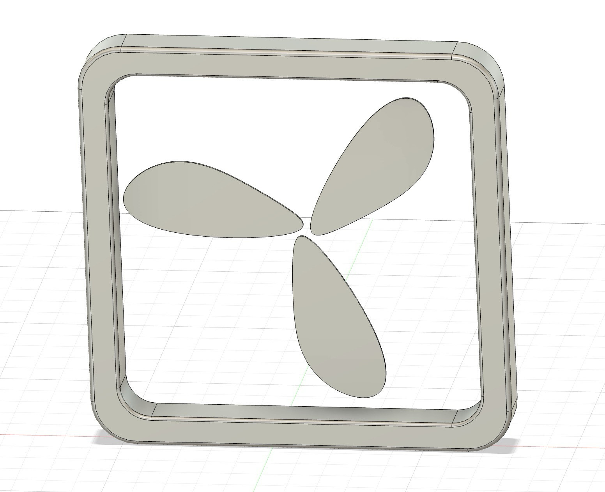
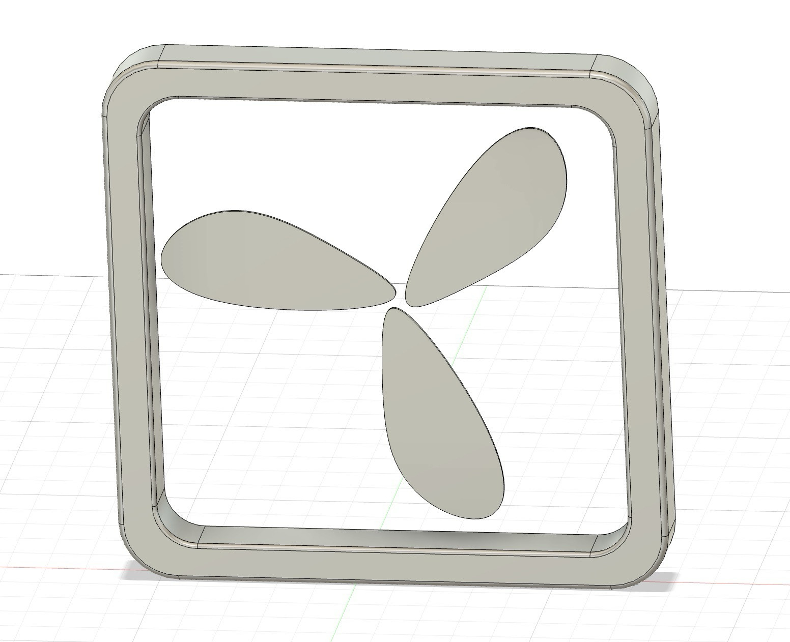
Mug Model
-
Profile for revolve
Sketch half cross‑section on the Front plane with a vertical axis centerline. Use Offset to define wall thickness. Add blended bottom radii using two arcs. Fully constrain: height, rim OD, thickness, and radii. -
Revolve and shell
Revolve the profile around the centerline to create the solid. Apply Shell from the top face to target 3–4 mm wall thickness. -
Handle sketch and extrude
On a side plane, sketch a tapered handle strip with smooth arcs; dimension width and clearance. Extrude as a new body so the ends intersect the mug. -
Join and refine
Combine → Join to attach handle. Add generous Fillets at the junction and a small rim fillet for comfort.
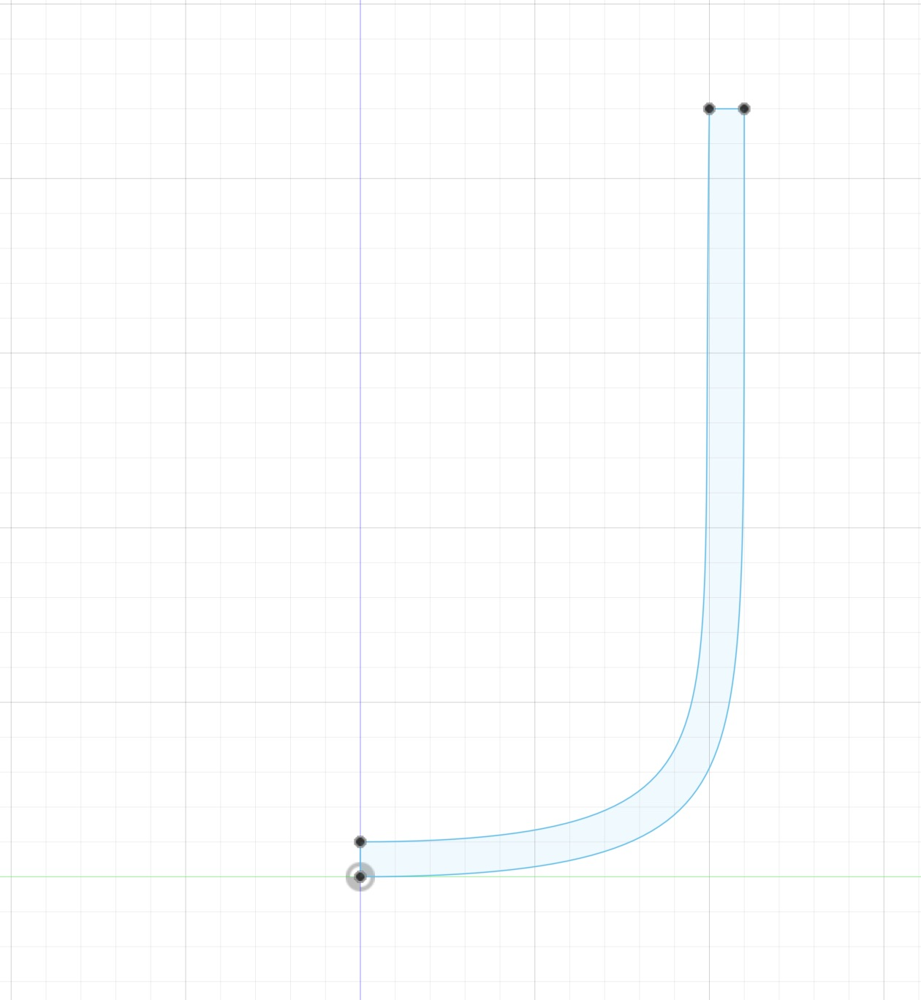
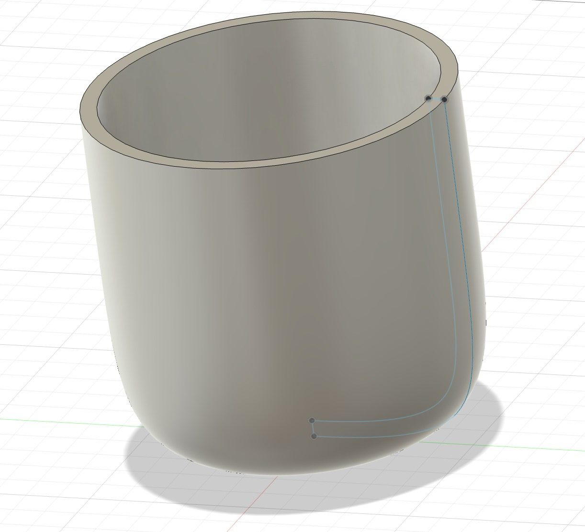
 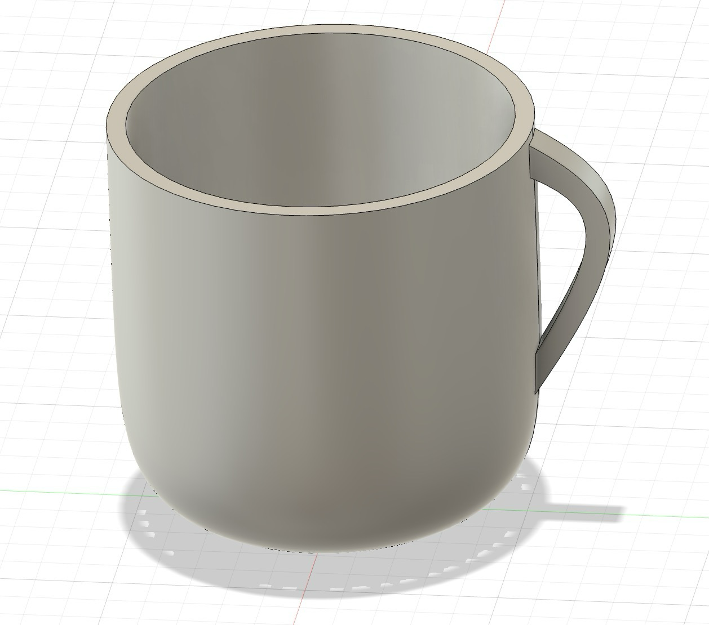
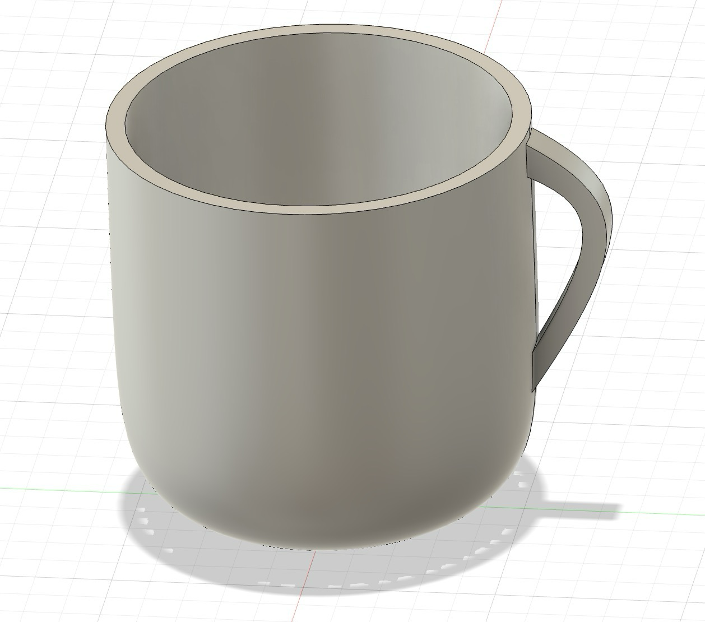

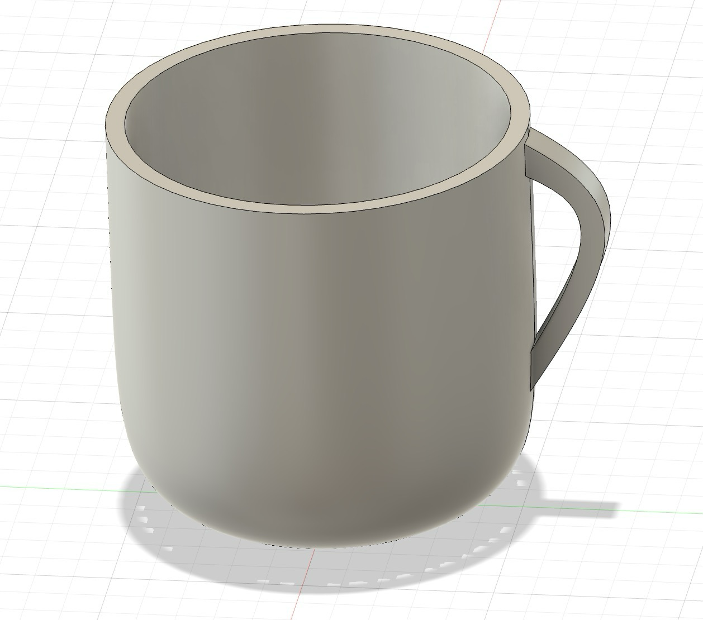
Laser-cut finger‑jointed box
I designed an open‑top, finger‑jointed box in Fusion and fabricated it on the laser cutter. I followed a tutorial with a parameter‑driven approach so the finger sizes update when box dimensions or the number of fingers change. After exporting the faces, I laser cut the parts and hot‑glued the notches. I also scored (and later hand‑scored) my initials on the box.
ffParametric setup and feature patterning
- Define Parameters — length, width, height, material thickness (e.g. 3.175 mm for 1/8"), and how many fingers along each edge (L/W/H). Compute finger widths from those values so joints adapt as dimensions change.
- Create the bottom panel — Sketch a rectangle (L×W) on the XY plane and Extrude by the thickness.
- Cut one notch, then use Rectangular Pattern (Create → Pattern → Rectangular Pattern) — On an edge, sketch a single finger rectangle constrained to the edges; Extrude Cut by thickness to make one notch. Pattern the feature (not the sketch) along the edge using the finger count and total spacing so the last finger lands correctly. Repeat this strategy on the mating edges of adjacent panels.
- Panels and joints — Extrude front/back/left/right panels as new bodies, then use Modify → Combine (Cut, Keep Tools) to transfer matching notches between bodies.
 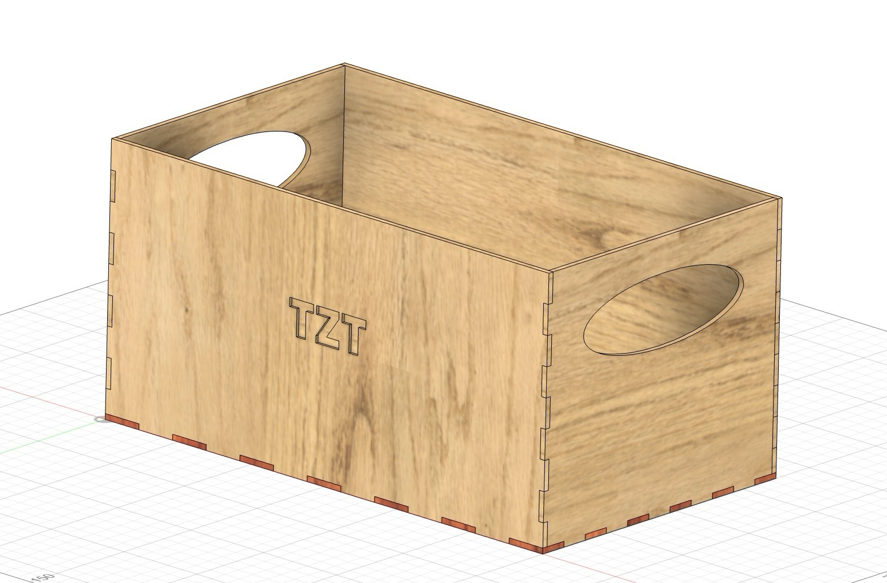
/>
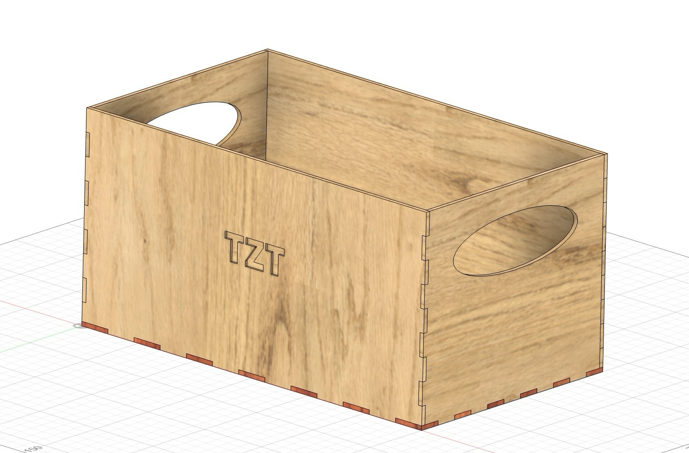
/>
Fabrication and assembly
- Laser cut the six faces from 1/8" stock using the exported profiles.
- Assembly Hot‑glue along the finger joints; check for square while the glue sets.
- Marking Lightly scored my initials on the lid/side and later deepened them by hand.
Final result
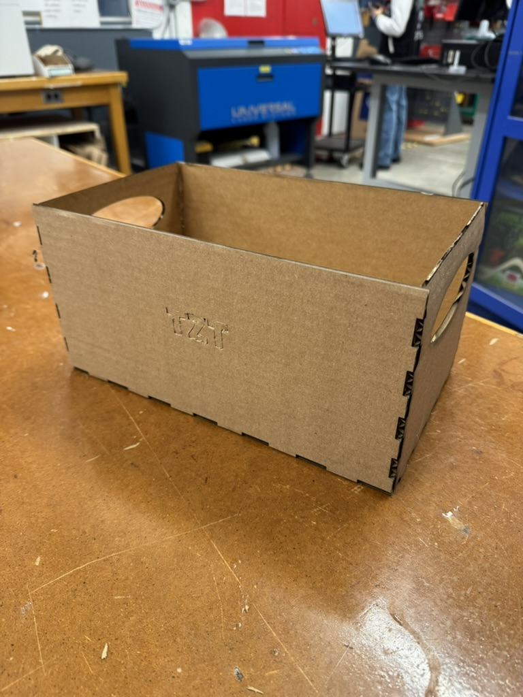
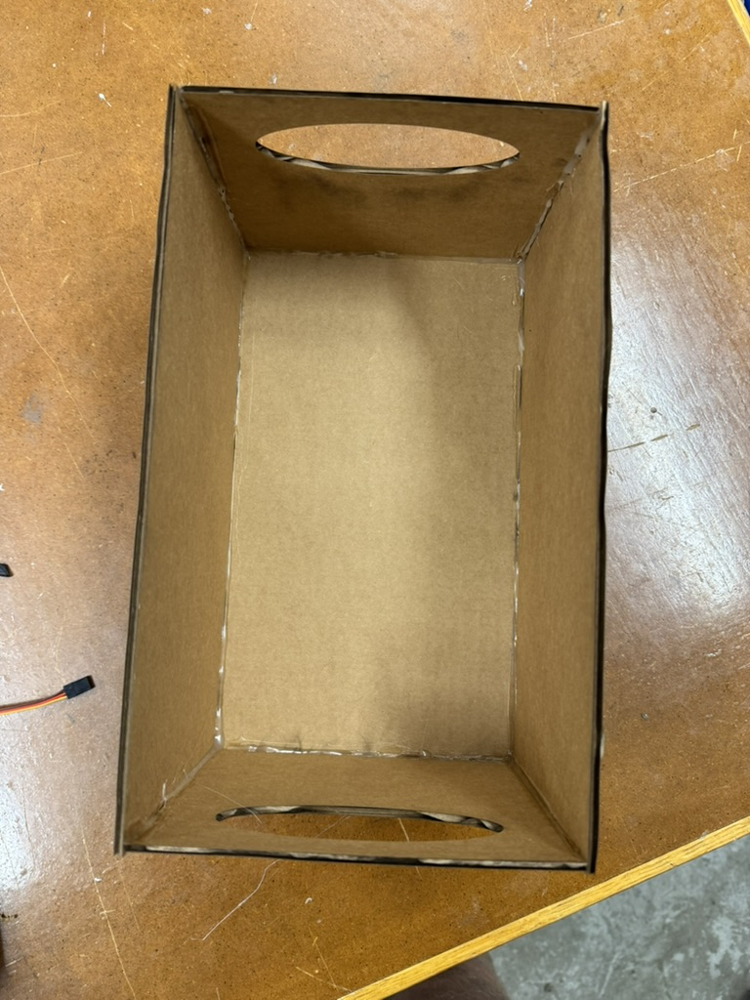
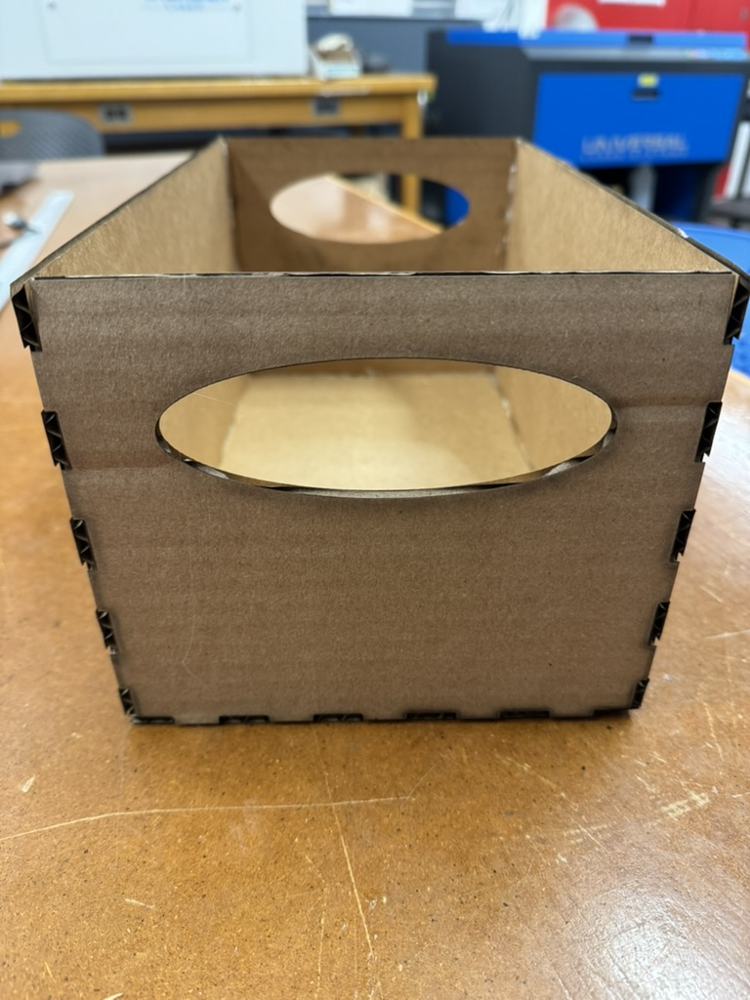